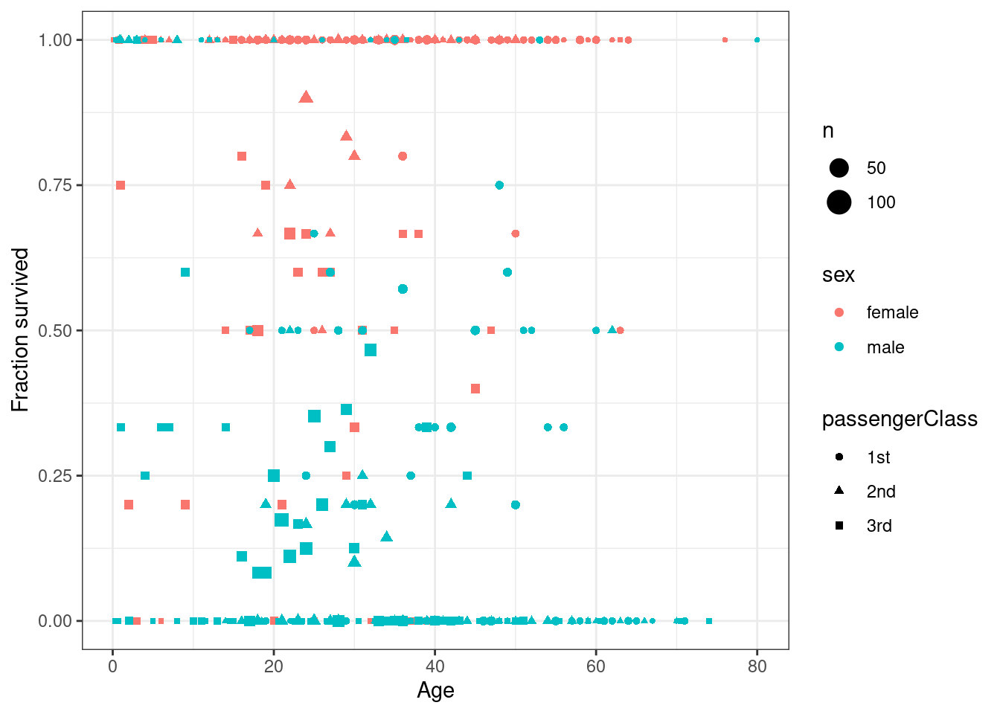
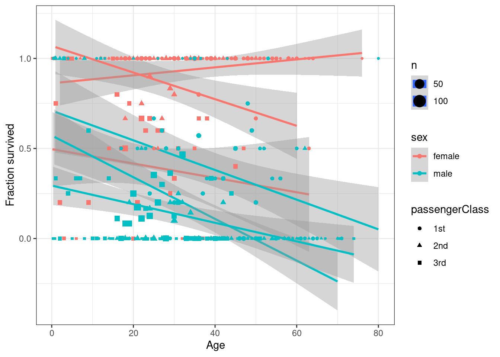
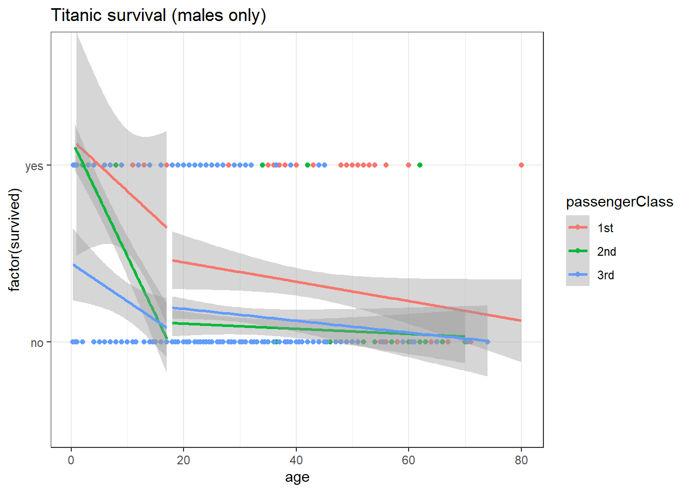

Econometrics II Notes 20201
Spring 2021
1 Limited dependent variable models
1.1 Some example data
##
## Attaching package: 'dplyr'## The following objects are masked from 'package:stats':
##
## filter, lag## The following objects are masked from 'package:base':
##
## intersect, setdiff, setequal, unionD<-(data.frame(read.csv("https://vincentarelbundock.github.io/Rdatasets/csv/carData/TitanicSurvival.csv"))
)
DSummary<-D %>% group_by(sex,age,passengerClass) %>% summarize(fracSurvived = mean(1*(survived=="yes")),n=n())## `summarise()` has grouped output by 'sex', 'age'. You can override using the `.groups` argument.| sex | age | passengerClass | fracSurvived | n |
|---|---|---|---|---|
| female | 0.1667 | 3rd | 1.00 | 1 |
| female | 0.7500 | 3rd | 1.00 | 2 |
| female | 0.9167 | 2nd | 1.00 | 1 |
| female | 1.0000 | 2nd | 1.00 | 1 |
| female | 1.0000 | 3rd | 0.75 | 4 |
| female | 2.0000 | 1st | 0.00 | 1 |
library(ggplot2)
(ggplot(DSummary ,aes(y=fracSurvived,x=age,color=sex,shape=passengerClass,size=n))
+geom_point()
+theme_bw()
+xlab("Age")
+ylab("Fraction survived")
+theme_bw()
)
1.2 Analyzing with linear regression
D <- (D
%>% mutate(adult = 1*(age>=18),
class2 = 1*(passengerClass=="2nd"),
class3 = 1*(passengerClass=="3rd"),
male = 1*(sex=="male"),
S = 1*(survived=="yes")
)
)
reg1<-lm(S ~ age + sex+class2+class3,data=D)
reg2<-lm(S ~ age + adult+ sex+class2+class3,data=D)
reg3<-lm(S ~ age + adult +adult*male + sex + class2 + class3,data=D)
library(stargazer)##
## Please cite as:## Hlavac, Marek (2018). stargazer: Well-Formatted Regression and Summary Statistics Tables.## R package version 5.2.2. https://CRAN.R-project.org/package=stargazer| Dependent variable: | |||
| S | |||
| (1) | (2) | (3) | |
| age | -0.005*** | -0.004*** | -0.004*** |
| (0.001) | (0.001) | (0.001) | |
| adult | -0.057 | 0.069 | |
| (0.043) | (0.057) | ||
| male | -0.296*** | ||
| (0.063) | |||
| sexmale | -0.491*** | -0.490*** | |
| (0.026) | (0.026) | ||
| class2 | -0.211*** | -0.207*** | -0.202*** |
| (0.035) | (0.035) | (0.035) | |
| class3 | -0.370*** | -0.367*** | -0.362*** |
| (0.033) | (0.033) | (0.032) | |
| adult:male | -0.232*** | ||
| (0.069) | |||
| Constant | 1.105*** | 1.124*** | 1.015*** |
| (0.044) | (0.046) | (0.056) | |
| Observations | 1,046 | 1,046 | 1,046 |
| R2 | 0.369 | 0.370 | 0.377 |
| Adjusted R2 | 0.367 | 0.367 | 0.373 |
| Residual Std. Error | 0.391 (df = 1041) | 0.391 (df = 1040) | 0.389 (df = 1039) |
| F Statistic | 152.257*** (df = 4; 1041) | 122.252*** (df = 5; 1040) | 104.795*** (df = 6; 1039) |
| Note: | p<0.1; p<0.05; p<0.01 | ||
(ggplot(DSummary ,aes(y=fracSurvived,x=age,color=sex,shape=passengerClass,size=n))
+geom_smooth(method="lm")
+geom_point()
+theme_bw()
+xlab("Age")
+ylab("Fraction survived")
+theme_bw()
)
(
ggplot(data=(D %>% filter(sex=="male")), aes(x=age,y=factor(survived),group=paste(factor(age<18),passengerClass),color=passengerClass))
+geom_point()
+geom_smooth(method="lm")
+theme_bw()
+labs(title="Titanic survival (males only)")
)